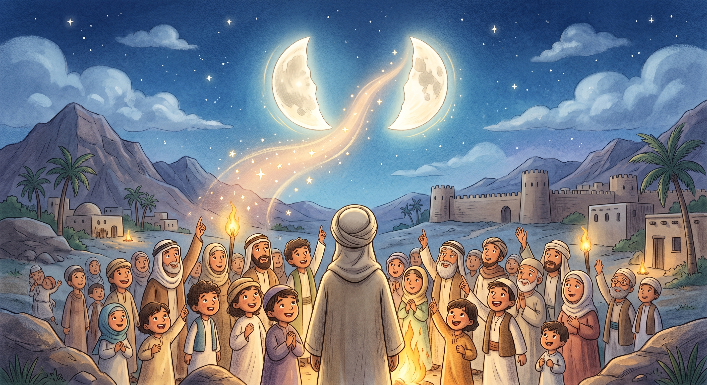
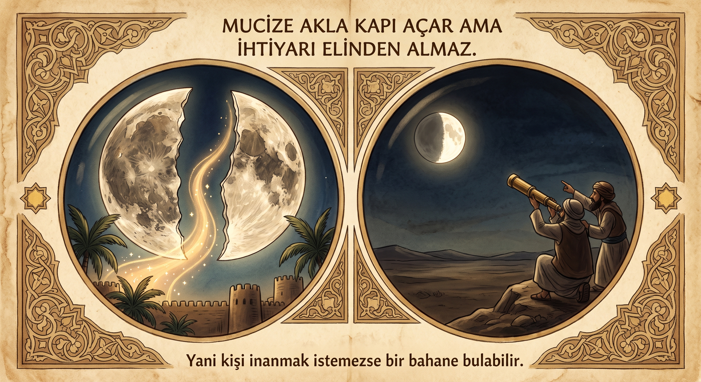
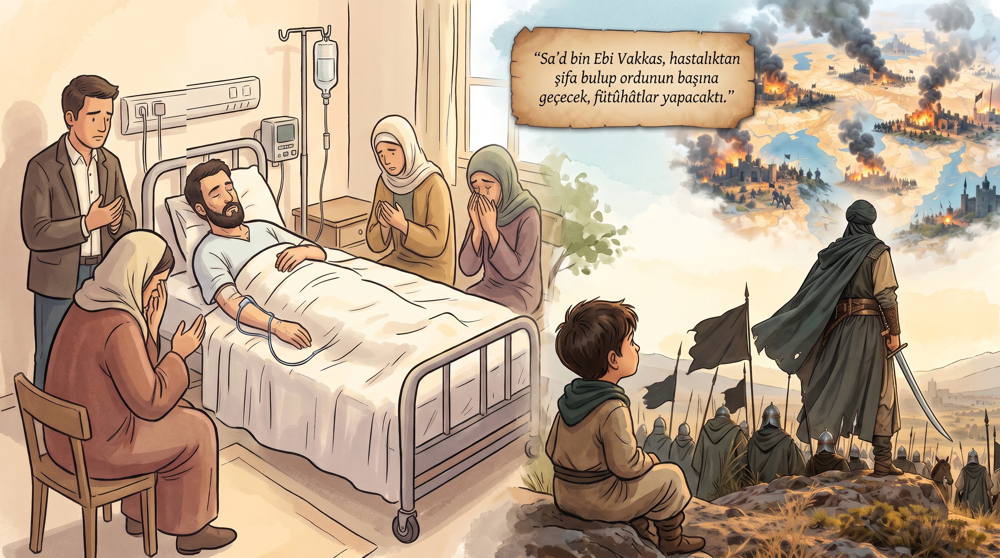
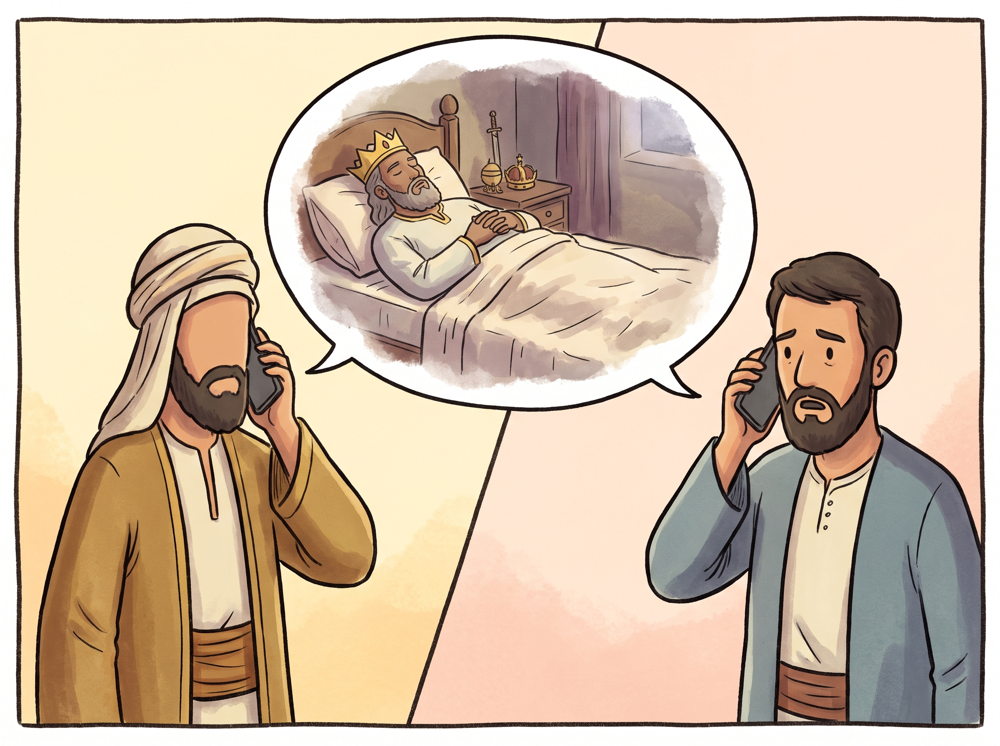
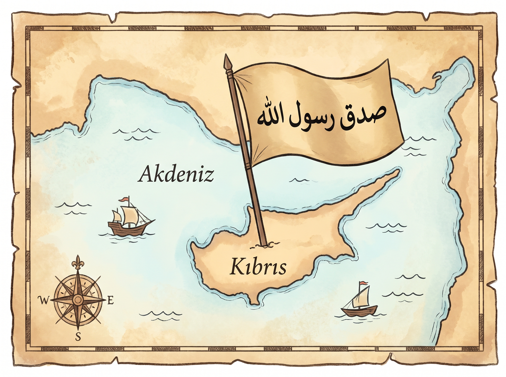
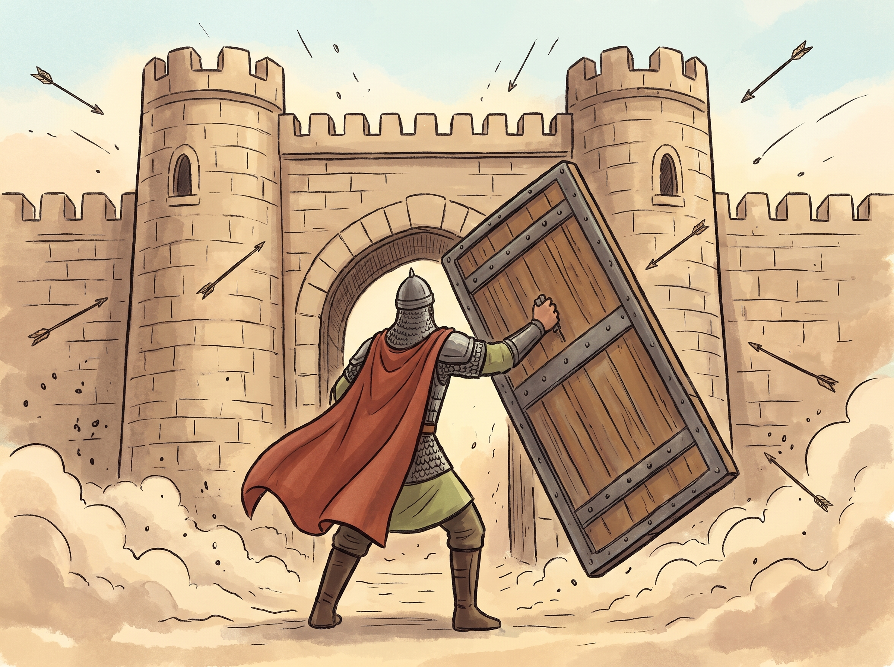

بسم الله الرحمن الرحيم
Was denkst du??


Was denkst du??


Warum ist es so??



Nachdenken ist sehr nützlich! Lasst uns zusammen lesen den Text zum Nachdenken!

Lasst uns ein paar Sätze zu diesem Thema ins Deutsch übersetzen!

Kahoot Zeit!

Sag ein Wort und finde es in deinem Telefon, wähl eine Abschnitt und lies!

Recherchieren Sie, Hadithe über guten Charakter (gute Moral)?


Namaz Übung! Lies laut vor!
Zeit, ein Gebet auswendig zu lernen! Zusammen und 7 Mal in der Reihe laut vorlesen!
يَا مَالِكَ الْمُلْكِ ,يَا كَث۪يرَ الْخَيْرِ ,يَا كَر۪يمَ الصَّفْحِ
Ey mülkün yegâne maliki olan! Ey iyilikleri pek çok olan! Ey afv u müsamahası bol olan!Lass uns heute, was wir gefühlen haben, was wir verstanden haben, was wir gedachten haben, was wir gelernt haben als einen kurzen Text im Blog auf Deutsch oder auf Türkisch schreiben!
والحمد لله رب العالمين